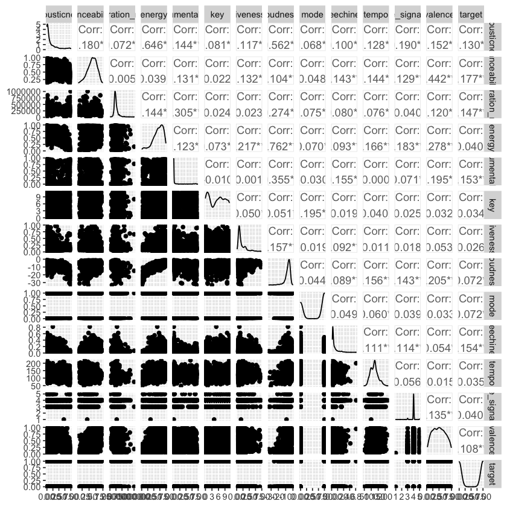

Statistic Inference¶
This is a R base notebook
We saw some pattern in EDA, naturally, we would like to see if the different between feature are significantly related to the target.
Import libaries¶
library(tidyverse)
library(broom)
library(GGally)
---------------------------------------------------------------------------
NameError Traceback (most recent call last)
/var/folders/zn/40lvk7q11ddb7fryhn5vq7x80000gn/T/ipykernel_86924/3796281200.py in <module>
----> 1 library(tidyverse)
2 library(broom)
3 library(GGally)
NameError: name 'library' is not defined
Reading the data CSV¶
Read in the data CSV and store it as a pandas dataframe named spotify_df.
spotify_df <- read_csv("data/spotify_data.csv")
head(spotify_df)
New names:
* `` -> ...1
Rows: 2017 Columns: 17
── Column specification ────────────────────────────────────────────────────────
Delimiter: ","
chr (2): song_title, artist
dbl (15): ...1, acousticness, danceability, duration_ms, energy, instrumenta...
ℹ Use `spec()` to retrieve the full column specification for this data.
ℹ Specify the column types or set `show_col_types = FALSE` to quiet this message.
| ...1 | acousticness | danceability | duration_ms | energy | instrumentalness | key | liveness | loudness | mode | speechiness | tempo | time_signature | valence | target | song_title | artist |
|---|---|---|---|---|---|---|---|---|---|---|---|---|---|---|---|---|
| <dbl> | <dbl> | <dbl> | <dbl> | <dbl> | <dbl> | <dbl> | <dbl> | <dbl> | <dbl> | <dbl> | <dbl> | <dbl> | <dbl> | <dbl> | <chr> | <chr> |
| 0 | 0.01020 | 0.833 | 204600 | 0.434 | 0.021900 | 2 | 0.1650 | -8.795 | 1 | 0.4310 | 150.062 | 4 | 0.286 | 1 | Mask Off | Future |
| 1 | 0.19900 | 0.743 | 326933 | 0.359 | 0.006110 | 1 | 0.1370 | -10.401 | 1 | 0.0794 | 160.083 | 4 | 0.588 | 1 | Redbone | Childish Gambino |
| 2 | 0.03440 | 0.838 | 185707 | 0.412 | 0.000234 | 2 | 0.1590 | -7.148 | 1 | 0.2890 | 75.044 | 4 | 0.173 | 1 | Xanny Family | Future |
| 3 | 0.60400 | 0.494 | 199413 | 0.338 | 0.510000 | 5 | 0.0922 | -15.236 | 1 | 0.0261 | 86.468 | 4 | 0.230 | 1 | Master Of None | Beach House |
| 4 | 0.18000 | 0.678 | 392893 | 0.561 | 0.512000 | 5 | 0.4390 | -11.648 | 0 | 0.0694 | 174.004 | 4 | 0.904 | 1 | Parallel Lines | Junior Boys |
| 5 | 0.00479 | 0.804 | 251333 | 0.560 | 0.000000 | 8 | 0.1640 | -6.682 | 1 | 0.1850 | 85.023 | 4 | 0.264 | 1 | Sneakin’ | Drake |
Regression¶
Data Wrangle¶
Remove
song_titleandartistfor relationship study by regression. As both of them are neither numerical nor categorical features.
spotify_df_num <- spotify_df[2:15]
head(spotify_df_num)
| acousticness | danceability | duration_ms | energy | instrumentalness | key | liveness | loudness | mode | speechiness | tempo | time_signature | valence | target |
|---|---|---|---|---|---|---|---|---|---|---|---|---|---|
| <dbl> | <dbl> | <dbl> | <dbl> | <dbl> | <dbl> | <dbl> | <dbl> | <dbl> | <dbl> | <dbl> | <dbl> | <dbl> | <dbl> |
| 0.01020 | 0.833 | 204600 | 0.434 | 0.021900 | 2 | 0.1650 | -8.795 | 1 | 0.4310 | 150.062 | 4 | 0.286 | 1 |
| 0.19900 | 0.743 | 326933 | 0.359 | 0.006110 | 1 | 0.1370 | -10.401 | 1 | 0.0794 | 160.083 | 4 | 0.588 | 1 |
| 0.03440 | 0.838 | 185707 | 0.412 | 0.000234 | 2 | 0.1590 | -7.148 | 1 | 0.2890 | 75.044 | 4 | 0.173 | 1 |
| 0.60400 | 0.494 | 199413 | 0.338 | 0.510000 | 5 | 0.0922 | -15.236 | 1 | 0.0261 | 86.468 | 4 | 0.230 | 1 |
| 0.18000 | 0.678 | 392893 | 0.561 | 0.512000 | 5 | 0.4390 | -11.648 | 0 | 0.0694 | 174.004 | 4 | 0.904 | 1 |
| 0.00479 | 0.804 | 251333 | 0.560 | 0.000000 | 8 | 0.1640 | -6.682 | 1 | 0.1850 | 85.023 | 4 | 0.264 | 1 |
Set up regression model¶
Here, I am interested in determining factors associated with target. In particular, I will use a Multiple Linear Regression (MLR) Model to study the relation between target and all other features.
ML_reg <- lm( target ~ ., data = spotify_df_num) |> tidy(conf.int = TRUE)
ML_reg<- ML_reg |>
mutate(Significant = p.value < 0.05)
ML_reg
| term | estimate | std.error | statistic | p.value | conf.low | conf.high | Significant |
|---|---|---|---|---|---|---|---|
| <chr> | <dbl> | <dbl> | <dbl> | <dbl> | <dbl> | <dbl> | <lgl> |
| (Intercept) | -3.134812e-01 | 2.059689e-01 | -1.5219831 | 1.281712e-01 | -7.174168e-01 | 9.045451e-02 | FALSE |
| acousticness | -3.253308e-01 | 5.499465e-02 | -5.9156814 | 3.877171e-09 | -4.331835e-01 | -2.174781e-01 | TRUE |
| danceability | 4.152529e-01 | 7.790702e-02 | 5.3301087 | 1.092109e-07 | 2.624656e-01 | 5.680401e-01 | TRUE |
| duration_ms | 5.623683e-07 | 1.378752e-07 | 4.0788202 | 4.703718e-05 | 2.919744e-07 | 8.327621e-07 | TRUE |
| energy | 9.027844e-02 | 9.270219e-02 | 0.9738544 | 3.302464e-01 | -9.152438e-02 | 2.720812e-01 | FALSE |
| instrumentalness | 2.676363e-01 | 4.426298e-02 | 6.0465044 | 1.761141e-09 | 1.808300e-01 | 3.544426e-01 | TRUE |
| key | 9.746404e-04 | 2.921294e-03 | 0.3336331 | 7.386913e-01 | -4.754452e-03 | 6.703733e-03 | FALSE |
| liveness | 9.815487e-02 | 7.011975e-02 | 1.3998178 | 1.617228e-01 | -3.936041e-02 | 2.356702e-01 | FALSE |
| loudness | -2.329719e-02 | 4.847288e-03 | -4.8062310 | 1.652404e-06 | -3.280344e-02 | -1.379093e-02 | TRUE |
| mode | -3.480749e-02 | 2.197412e-02 | -1.5840223 | 1.133465e-01 | -7.790202e-02 | 8.287029e-03 | FALSE |
| speechiness | 8.164797e-01 | 1.211094e-01 | 6.7416693 | 2.041089e-11 | 5.789661e-01 | 1.053993e+00 | TRUE |
| tempo | 7.953468e-04 | 4.087155e-04 | 1.9459667 | 5.179843e-02 | -6.205250e-06 | 1.596899e-03 | FALSE |
| time_signature | -8.632448e-03 | 4.221197e-02 | -0.2045024 | 8.379817e-01 | -9.141642e-02 | 7.415152e-02 | FALSE |
| valence | 1.647899e-01 | 5.087437e-02 | 3.2391535 | 1.218473e-03 | 6.501768e-02 | 2.645621e-01 | TRUE |
We can see that a lot of features are statiscally correlated with target. They are listed in the table below.
ML_reg |>
filter(Significant == TRUE) |>
select(term)
| term |
|---|
| <chr> |
| acousticness |
| danceability |
| duration_ms |
| instrumentalness |
| loudness |
| speechiness |
| valence |
GGpairs¶
Below is the ggpair plots to visual the correlation between different features.
ggpairs(data = spotify_df_num)
